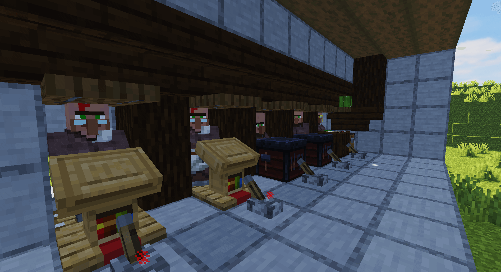
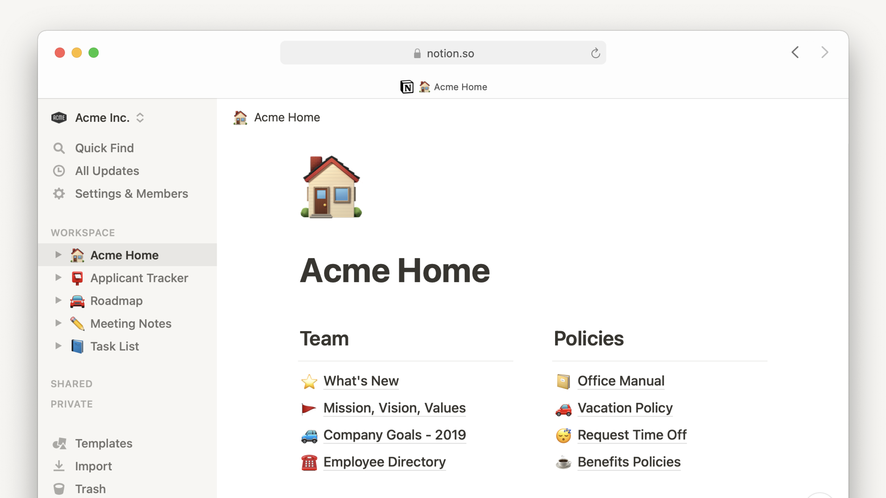
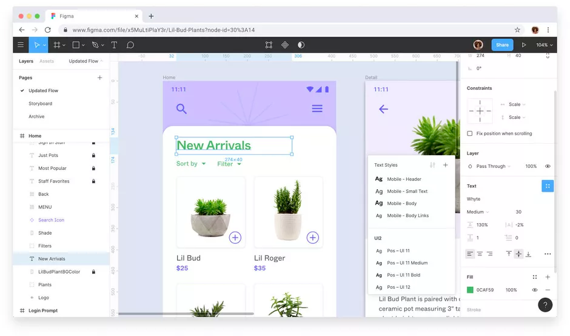
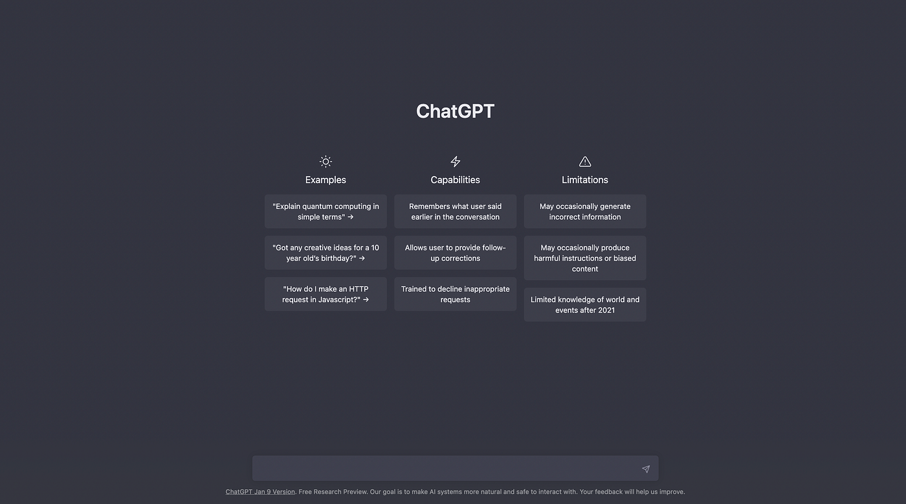

A couple days ago, as I was immersing myself in the pixelated expanses of Minecraft, a realization dawned
upon me. Amdist the crafting, building, and exploring, the essence of what makes this game irresistibly
engaging is the unparalleled freedom it grants its players. This freedom is not merely a feature but the
very soul of Minecraft, allowing for an endless tapestry of creativity, exploration, and
customization.

It was during one of
these
reflective moments, as I gazed upon my Redstone-powered automated villager trading hall and recreation
of 1800s New York, that a parallel stuck me—a parallel between the sandbox of Minecraft and the
ethos of certain software I use daily. This contemplation led me to an epiphany about the nature of
software design that resonates with the principles found in sandbox games
In the realm of
software, particularly those tools designed to foster creativity and productivity, there exists a
category that embodies the sandbox game's philosophy: "sandbox" software. Unlike its namesake in
computer security, which confines to isolate and test, this genre of software thrives on providing users
with a bounded environment of freedom and the necessary tools for exploration, creation, and
personalization.
In the software that I use daily, I have found that Notion, Figma,
and ChatGPT stand as quintessential examples of this philosoph in action, showcasing why sandbox
software represents a superior approach to digital tool design.
Notion

Notion serves as a dynamic workspace that blurs the lines
between a document, a database, a wiki, and a task management system. Its sandbox nature lies in its
modular design, allowing users to craft their own workflows, databases, and documentation systems with
unparalleled flexibility. This adaptability makes Notion not just a tool, but a playground for thought,
where the only limit to its use is the user's imagination. Hell, I bet someday soon Notion will have
enough features to become Turing complete, just like Figma or Minecraft's Redstone.
In contrast
to rigid, single-purpose software, Notion's open-ended environment encourages creative solutions and
personalization, demonstrating the inherent value of sandbox software.
Figma

Figma, on the other hand, redefines the landscape of
design tools by emphasizing collaboration, interactivity, and fluidity. Figma's sandbox is its canvas,
where designers can play, experiment, and iterate in real-time with others. Its vector-based interface
coupled with powerful plugin support and a community-driven resource library exemplify the sandbox
software ethos. Designers are not just users but creators and explorers, navigating a digital sandbox
where the possibilities for creation are boundless.
ChatGPT

ChatGPT, in its essence, also mirrors the ethos of
"sandbox" software through its conversational design. Unlike traditional chatbots that serves singular,
predefined responses and a tree of possible messages, ChatGPT offers a conversational playground where
users are not just consumers of information but active participants in an interactive exchange. The
sandbox is the boundless environment where users can explore a myriad of topics, ask questions, craft
stories, solve complex problems, or even generate creative content like poetry and code, all through
natural language. The only limit, much like the previous pieces of software I mentioned, is the user's
imagination.
These examples underscore a fundamental truth: "sandbox" software, by its very
nature, fosters a deeper level of engagement, cerativity, and productivity. It does so not through
constraints but through the freedom of allowing the user to explore, customize, and innovate.this
philosophy of software design holds the key to unlocking the true potential of digital tools,
transforming users from mere consumers into creators.
To cultivate the sandbox ethos in software
design, engineers and designers should embrace several core principles:
1. Flexibility Over
Rigidity: Design software that adapts to the user's needs and workflows. This means providing a
robust set of tools and options that users can tailor to their specific requirements.
2.
Empowerment Through Tools: Equip users with a diverse range of features and capabilities that
encourage experimentation. The more tools at a user's disposal, the greater their capacity to explore
and create (in most cases at least)
3. Learning and Growth: Design software with the
understanding that users will evolve with the software. Encourage this growth by making the software
accessible to beginners while offering depth for advanced users.
4. Open-Endedness: Ensure
that the software does not impose unnecessary goals or constraints on the user. Like a sandbox game, the
journey should be defined by the user's curiosity and creativity.
In conclusion, the "sandbox"
software paradigm offers a more enriching, flexible, and creative experience for users compared to its
more rigid counterparts. By drawing inspiration from sandbox games, software designers can create tools
that not only serve functional purposes but also inspire creativity, foster collaboration, and elevate
the user's role from that of a passive participant to an active creator. In embracing the principles of
sandbox software desig, we can unlock a future where digital tools are not just used but experienced,
explored, and expanded in ways that mirror the boundless potentital of human creativity.